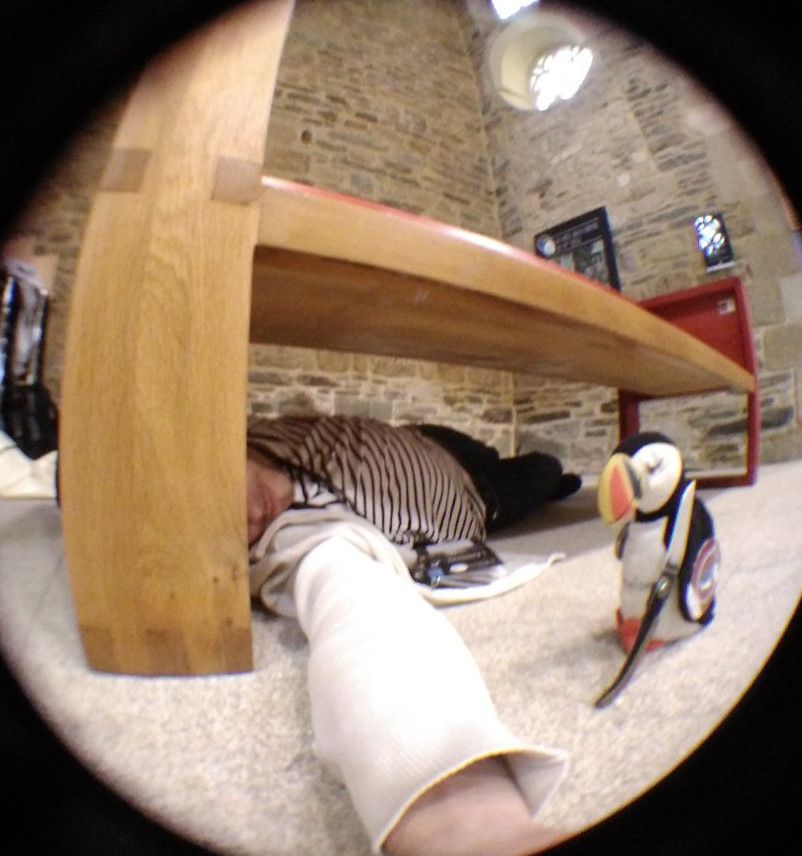
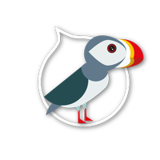
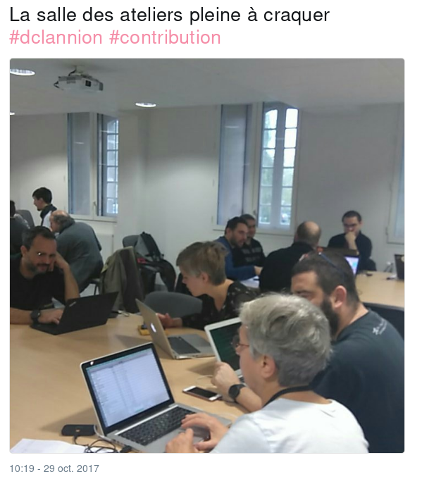
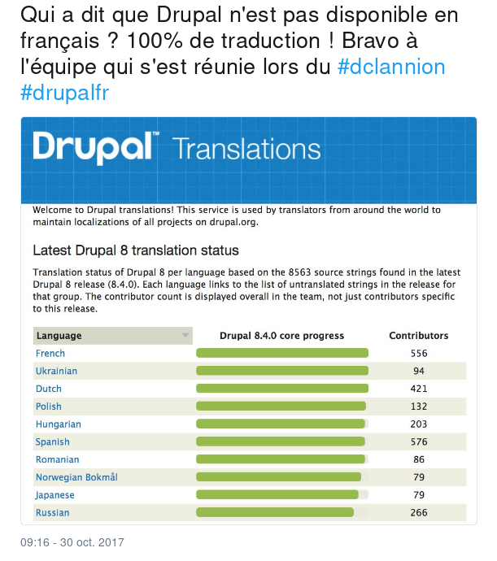
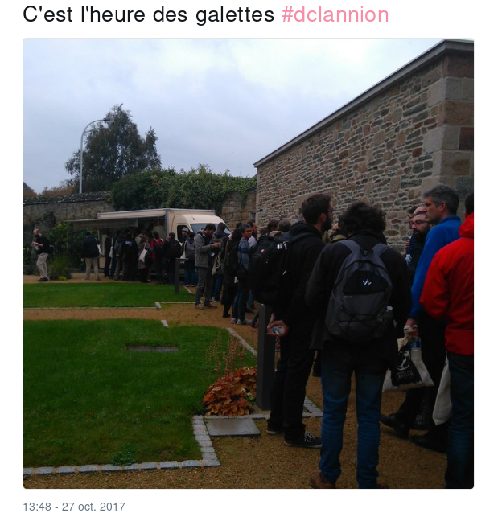
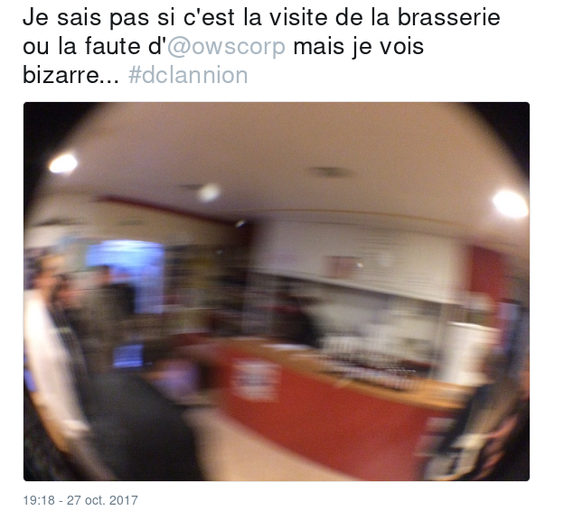

Retours sur le
DrupalCamp Lannion
27/28/29 Octobre 2017
Romain Moro
Développeur PHP/Drupal
 @c4ilus
@c4ilus
 https://www.drupal.org/u/c4ilus
https://www.drupal.org/u/c4ilus


En bref ...
- Organisé chaque année par Drupal France
- Une centaine de participants
- 2 jours de conférences (Vendredi, Samedi)
- 1 journée d'ateliers (Dimanche)
Quelques conférences
Ce que j'ai surtout retenu
La gestion des assets médias dans Drupal
Sylvain Moreau / @slybud (OWS)
https://lannion2017.drupalcamp.bzh/sites/default/files/sessions/OWS_DCLANNION_prez_media_20171027.pdfMon site est hacké ! Que faire ?
Frederic Marand / @fgm (OSInet)
https://speakerdeck.com/fgm/mon-site-est-hacke-que-faireHeadless Drupal en pratique
Simon Morvan / @garphy (Ici la lune)
https://fr.slideshare.net/SimonMorvan1/headless-drupal-en-pratiqueDrupal et le cache
Olivier Briat / @O'briat (Cap Gemini)
https://obriat.github.io/Drupal-et-le-cache/#/Gérer son site Drupal avec Ansible
Sebastien Corbin / @SebCorbin (Makina Corpus)
https://cdn.rawgit.com/makinacorpus/makina-slides/master/docs/ansible-drupal.html#slide1Retour d'expérience sur Migrate en Drupal 8
Simon Georges / @saisai (Makina Corpus)
http://simongeorges.github.io/slides/drupalcamp-rex-migrate-drupal8/#/Mais aussi ...
Des ateliers
Encore des ateliers
De la diététique
Des visites culturelles ... si si ....
Quelques liens
- Le site du Camp : https://lannion2017.drupalcamp.bzh/
- Un pad collaboratif : https://annuel.framapad.org/p/dclannion
- DrupalCamp sur Twitter : https://twitter.com/drupalcampfr